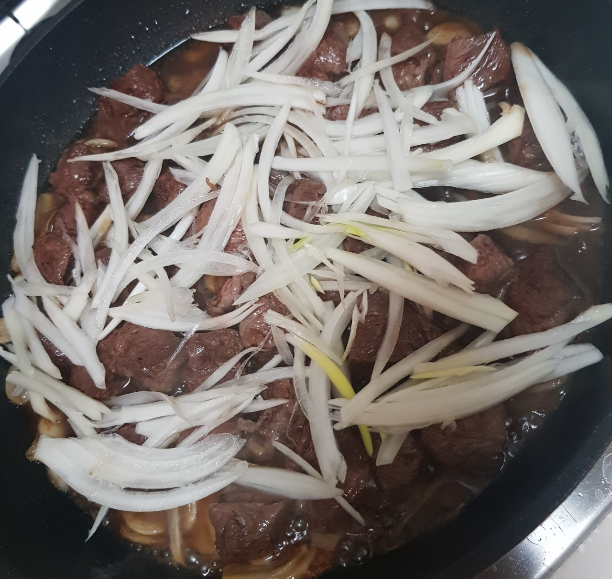

스테이크덮밥

- 재료
소고기, 통마늘, 양파 1/2개, 버터 1T, 간장 3T, 맛술 3T, 설탕 1T, 소금 톡톡, 후추 톡톡, 올리브유
- 조리순서
- 키친타올로 소고기 핏물을 잘 닦아줍니다.
소고기는 큐브 모양으로 썰어서 소금 톡톡, 후추 톡톡, 올리브유 조금 넣어둡니다.
- 마늘은 원하는 양만큼 편으로 얇게 썰고, 양파는 채썰어 둡니다.
예열한 팬에 올리브유를 두르고 편마늘을 넣어 볶습니다.
- 마늘이 익어가면 재워둔 소고기와 버터 1T를 넣어서 볶습니다.
소고기 겉이 익으면 채썬 양파와 간장 3T, 맛술 3T, 설탕 1T를 넣고 졸입니다.
- 그릇에 밥을 담고 고기와 양파를 얹으면 스테이크덮밥 완성!